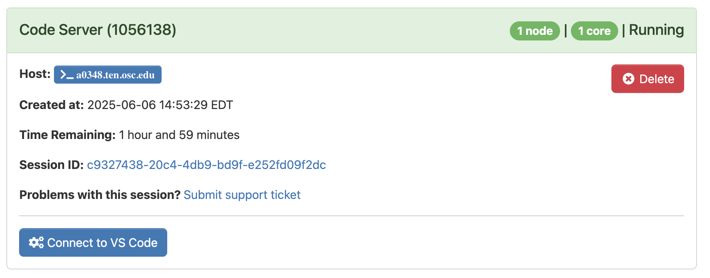
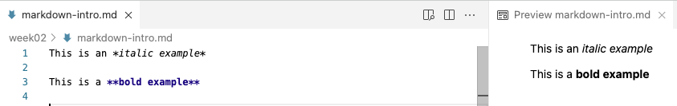
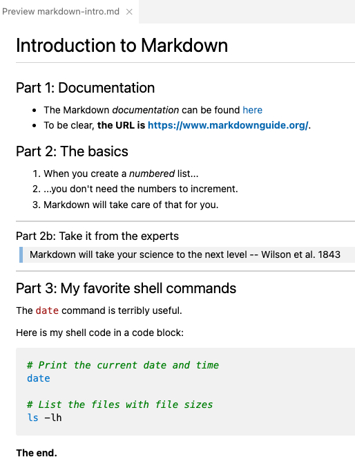

VS Code and Markdown
Week 4 - Part II
1 VS Code
1.1 Why VS Code?
VS Code is basically a fancy text editor. Its full name is Visual Studio Code, and it’s also called “Code Server” at OSC.
To emphasize the additional functionality relative to basic text editors like Notepad and TextEdit, editors like VS Code are also referred to as “IDEs”: Integrated Development Environments. The RStudio program is another good example of an IDE. Just like RStudio is an IDE for R, VS Code will be our IDE for shell code.
Some advantages of VS Code:
- Works with all operating systems, is free, and open source.
- Has an integrated terminal.
- Very popular nowadays – lots of development going on including by users (extensions).
- Available at OSC OnDemand (and also allows you to “SSH-tunnel” in with your local installation).
1.2 Starting VS Code at OSC
Log in to OSC’s OnDemand portal at https://ondemand.osc.edu.
In the blue top bar, select
Interactive Appsand near the bottom, clickCode Server.Interactive Apps like VS Code and RStudio run on compute nodes (not login nodes). Because compute nodes always need to be “reserved”, we have to fill out a form and specify the following details:
- The “Cluster” that we want to use:
ascend - The “Account”, i.e. the OSC Project that we want to bill for the compute node usage:
PAS2880. - The “Number of hours” we want to make a reservation for:
2 - The “Working Directory” for the program: your personal folder in
/fs/ess/PAS2880/users(e.g./fs/ess/PAS2880/users/jelmer) - The “Codeserver Version”:
4.8(should be the only one)
- The “Cluster” that we want to use:
Click
Launch— you will be sent to the “My Interactive Sessions” page with a box for your job at the top.First, your job may be “Queued” for some seconds (i.e., waiting for computing resources to be assigned to it), but it should soon switch to “Starting” and then be ready for usage (“Running”) in another couple of seconds:

Once the blue Connect to VS Code button appears, click that to open VS Code in a new browser tab.
When VS Code opens, you may get these two pop-ups (and possibly some others) — click “Yes” (and check the box) and “Don’t Show Again”, respectively:


- You’ll also get a Get Started/Welcome page — you don’t have to go through any steps that may be suggested there.
1.3 The VS Code User Interface

Side bars
The Activity Bar (narrow side bar) on the far left has:
A (“hamburger menu”), which has menu items like
Filethat you often find in a top bar.A (cog wheel icon) in the bottom, through which you can mainly access settings.
Icons to toggle (wide/Primary) Side Bar options:
- Explorer: File browser & outline for the active file.
- Search: To search recursively across all files in the active folder.
- Source Control: To work with Git (next week).
- Debugger
- Extensions: To install extensions (up soon).
If you want to save some screen space while coding along in class, you may want to occasionally hide the side bars:
- In >
View>Appearanceyou can toggle both theActivity Barand thePrimary Side Bar. - Or use keyboard shortcuts:
- Ctrl/⌘+B for the primary/wide side bar
- Ctrl+Shift+B for the activity/narrow side bar
Exercise: Try a few color themes
- Access the “Color Themes” option by clicking =>
Color Theme. - Try out a few themes and see pick one you like!
Terminal (with a Unix shell)
Open a terminal by clicking => Terminal => New Terminal.
Create a directory for this week, e.g.:
# You should be in your personal dir in /fs/ess/PAS2880
pwd/fs/ess/PAS2880/users/jelmermkdir week03Editor pane and Get Started document
The main part of the VS Code is the editor pane. Here, we can open files like scripts and other types of text files, and images. (Whenever you open VS Code, an editor tab with a Get Started document is automatically opened. This provides some help and some shortcuts like to recently opened files and folders.)
Let’s create and save a new file:
- Open a new file: Click the hamburger menu , then
File>New File. - Save the file (Ctrl/⌘+S), inside the dir you just created, as a Markdown file, e.g.
markdown-intro.md. (Markdown files have the extension.md.)
1.4 A folder as a starting point
Conveniently, VS Code takes a specific directory as a starting point in all parts of the program:
- In the file explorer in the side bar
- In the terminal
- When saving files in the editor pane.
This is why your terminal was “already” located in /fs/ess/PAS2880/users/$USER.
File > Open Folder.
When you reopen a folder you’ve had open before, VS Code will resume where you were before in that it will:
- Re-open any files you had open in the editor pane
- Re-open a terminal if you had one active
This is quite convenient, especially when you start working on multiple projects and frequently switch between those.
Some tips and tricks
Resizing panes
You can resize panes (terminal, editor, side bar) by hovering your cursor over the borders and then dragging.The Command Palette
To access all the menu options that are available in VS Code, the so-called “Command Palette” can be handy, especially if you know what you are looking for. To access the Command Palette, click and thenCommand Palette(or press F1 or Ctrl/⌘+Shift+P). To use it, start typing something to look for an option.Keyboard shortcuts
For a single-page PDF overview of keyboard shortcuts for your operating system: =>Help=>Keyboard Shortcut Reference. (Or for direct links to these PDFs: Windows / Mac / Linux.) A couple of useful keyboard shortcuts are highlighted below.
Working with keyboard shortcuts for common operations can be a lot faster than using your mouse. Below are some useful ones for VS Code (for Mac, in some case, you’ll have to replace Ctrl with ⌘):
- Open a terminal: Ctrl+` (backtick) or Ctrl+Shift+C.
- Toggle between the terminal and the editor pane: Ctrl+` and Ctrl+1.
- Line actions:
- Ctrl/⌘+X / C will cut/copy the entire line where the cursor is, when nothing is selected (!)
- Ctrl/⌘+Shift+K will delete a line
- Alt/Option+⬆/⬇ will move lines up or down.
Exercise: Install two extensions
Click the gear icon and then Extensions, and search for and then install:
- shellcheck (by simonwong) — this will check our shell scripts later on!
- Rainbow CSV (by mechatroner) — make CSV/TSV files easier to view with column-based colors
2 An introduction to Markdown
Markdown is a very lightweight text markup language that can be used in plain-text files. A source Markdown file can be “rendered” to produce an output file in a variety of formats like HTML and PDF.
For example, surrounding one or more characters by single or double asterisks (*) will make those characters italic or bold, respectively:
- When you write
*italic example*this will be rendered as: italic example. - When you write
**bold example**this will be rendered as: bold example.
Markdown is:
- Easy to write — a dozen or so syntax constructs, like the two above, is nearly all you use.
- Easy to read in source (“non-rendered”) form, and editors like VS Code will apply some formatting even in these source files.
I recommend that you use Markdown files (with a .md extension) instead of regular text (.txt) files to document your research projects as outlined in the previous session.
Learn more about Markdown and its syntax in this excellent documentation: https://www.markdownguide.org.
Markdown in VS Code
Below, we’ll be trying some Markdown syntax in the markdown-intro.md file we created earlier.
When you save a file in VS Code with an .md extension, as you have done:
- Some formatting will be automatically applied in the editor.
- You can open a live rendered preview by pressing the icon to “Open Preview to the Side” (top-right corner):

That will look something like this in VS Code:

2.1 Most common syntax
Here is an overview of the most commonly used Markdown syntax:
| Syntax | Result |
|---|---|
| *italic* | italic (alternative: single _) |
| **bold** | bold (alternative: double _) |
| [link text](website.com) | link text |
<https://website.com> |
Clickable link: https://website.com |
| # My Title | Header level 1 (largest) |
| ## My Section | Header level 2 |
| ### My Subsection | Header level 3 – and so forth |
| - List item | Unordered (bulleted) list |
| 1. List item | Ordered (numbered) list |
| `inline code` | inline code |
``` |
Start/end of generic code block (on its own line) |
```bash |
Start of bash code block (end with ```) |
--- |
Horizontal rule (line) |
| > Text | Blockquote (like quoted text in emails) |
|  | [The figure will be inserted] |
Let’s try some of these things — type:
# Introduction to Markdown
## Part 1: Documentation
- The Markdown _documentation_ can be found
[here](https://www.markdownguide.org/)
- To be clear,
**the URL is <https://www.markdownguide.org/>**.
## Part 2: The basics
1. When you create a _numbered_ list...
1. ...you don't need the numbers to increment.
1. Markdown will take care of that for you.
--------
### Part 2b: Take it from the experts
> Markdown will take your science to
> the next level
> -- Wilson et al. 1843
--------
## Part 3: My favorite shell commands
The `date` command is terribly useful.
Here is my shell code in a code block:
```bash
# Print the current date and time
date
# List the files with file sizes
ls -lh
```
**The end.**That should be previewed/rendered as:

2.2 Whitespace
It’s recommended (in some cases necessary) to leave a blank line between different sections: lists, headers, etc.:
## Section 2: List of ... - Item 1 - Item 2 For example, ....
- A blank line between regular text will start a new paragraph, with some whitespace between the two:
This:
Paragraph 1.
Paragraph 2.Will be rendered as:
Paragraph 1.
Paragraph 2.
- Whereas a single newline will be completely ignored!:
This:
Paragraph 1.
Paragraph 2.Will be rendered as:
Paragraph 1. Paragraph 2.
This:
Writing
one
word
per
line.Will be rendered as:
Writing one word per line.
- Multiple consecutive spaces and blank line will be “collapsed” into a single space/blank line:
This:
Empty spaceWill be rendered as:
Empty space
This:
Many
blank linesWill be rendered as:
Many
blank lines
- A single linebreak can be forced using two or more spaces (i.e., press the spacebar twice) or a backslash
\after the last character on a line:
This:
My first sentence.\
My second sentence.Will be rendered as:
My first sentence.
My second sentence.
- If you want more vertical whitespace than what is provided between paragraphs, you’ll have to resort to HTML1: each
<br>item forces a visible linebreak.
This:
One <br> word <br> per line
and <br> <br> <br> <br> <br>
several blank lines.Will be rendered as:
One
word
per line and
several blank lines.
2.3 Tables
Tables are not all that convenient to create in Markdown, but you can do it as follows.
This:
| city | inhabitants |
|——————|——————|
| Columbus | 906 K |
| Cleveland | 368 K |
| Cincinnati | 308 K |
Will be rendered as:
| city | inhabitants |
|---|---|
| Columbus | 906 K |
| Cleveland | 368 K |
| Cincinnati | 308 K |
If you need “inline colored text”, you can also use HTML:
inline <span style="color:red">colored</span> text.For systematic styling of existing or custom elements, you need to use CSS. For example, including the following anywhere in a Markdown document will turn all level 1 headers (
#) red:<style> h1 {color: red} </style>
2.4 Markdown extensions – Markdown for everything!
Several Markdown extensions allow Markdown documents to contain code that runs, and whose output can be included in rendered documents:
- R Markdown (
.Rmd) and the follow-up Quarto — we will learn Quarto later in this course. - Jupyter Notebooks (for Python)
There are many possibilities with Markdown! For instance, consider that:
- This website and last week’s slides are written using Quarto.
- R Markdown/Quarto also has support for citations, journal-specific formatting, etc., so you can even write manuscripts with it.
In practice, I rarely render “plain” Markdown files because:
- Markdown source is so well readable
- GitHub will render Markdown files for you (as we’ll see next week)
That said, if you do need to render a Markdown file to, for example, HTML or PDF, use Pandoc:
pandoc README.md > README.html
pandoc -o README.pdf README.mdTo install Pandoc on your own computer, see https://pandoc.org/installing.html.
Footnotes
You can use any HTML markup in Markdown!↩︎